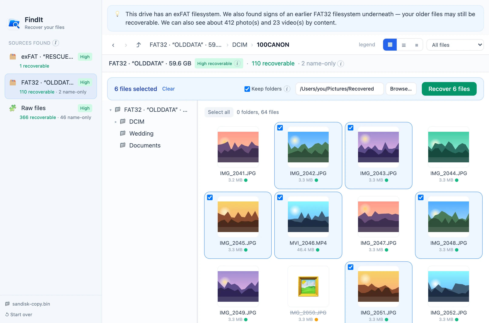
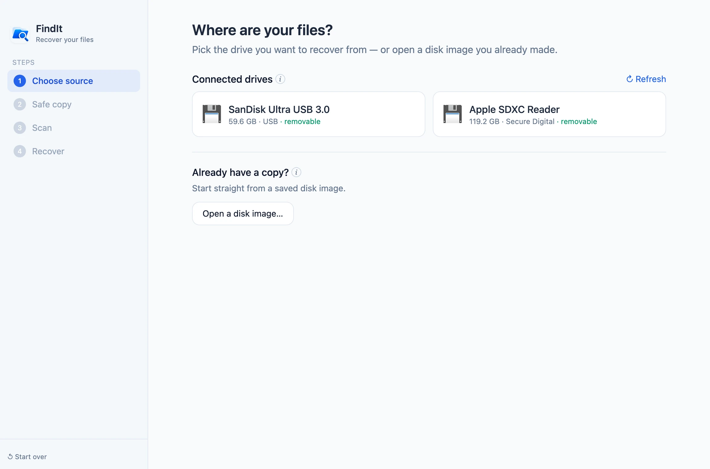
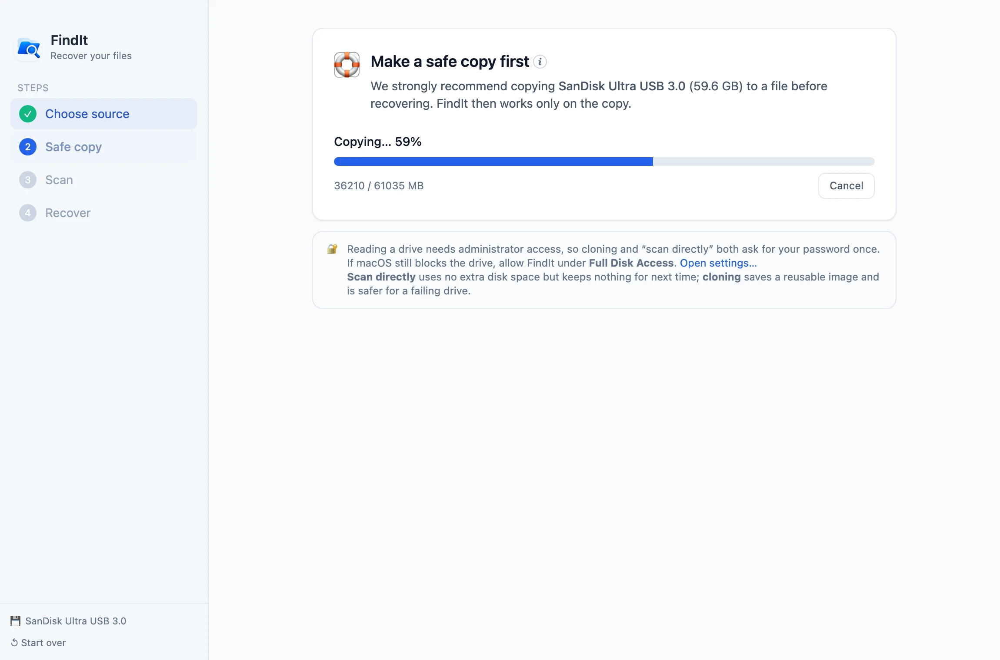
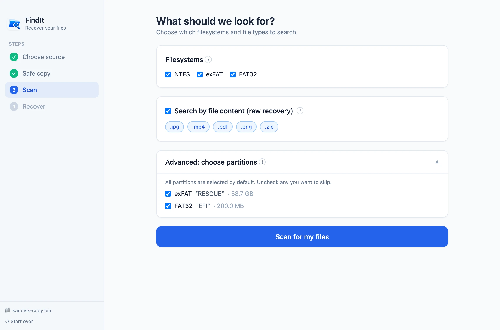
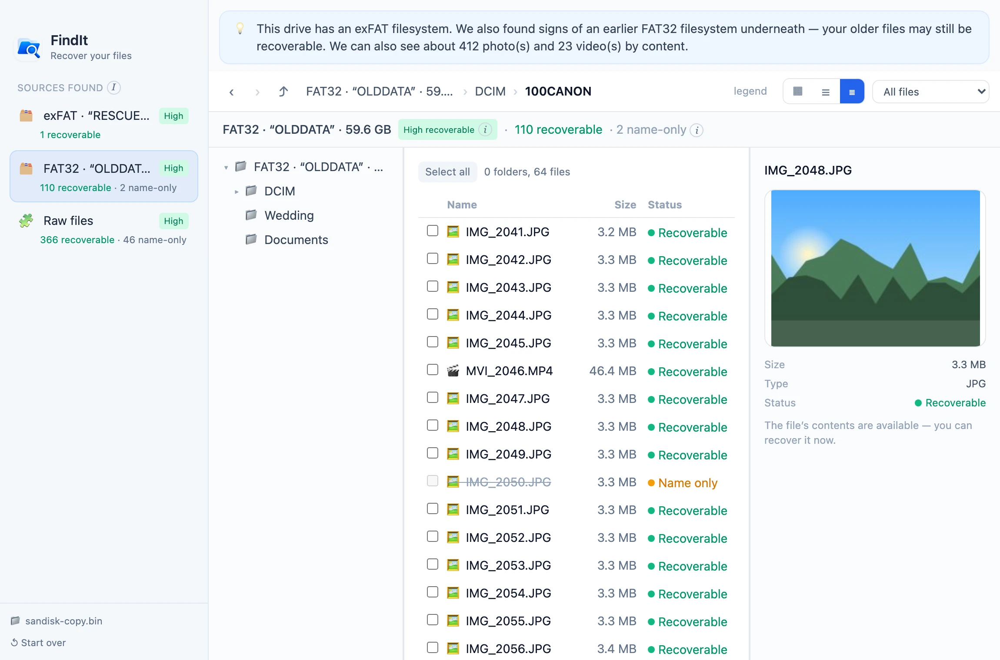
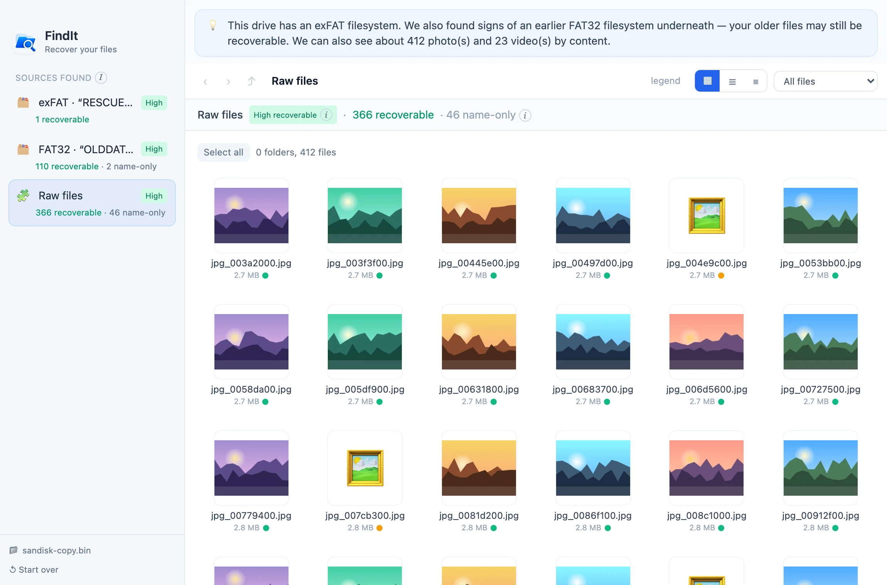

🫥
It suddenly looks empty
You plug in the USB stick or SD card and Finder shows nothing — or asks to initialize it.
Free and open source · for Mac
USB stick suddenly empty? Card reformatted by mistake? Files deleted? FindIt looks underneath what your Mac shows you, previews what can still be saved, and brings it back — in plain English, no expertise needed.

Sound familiar?
Deleting or reformatting mostly erases the index, not the data. Until something new is written over it, your photos, videos and documents are still sitting on the drive — FindIt knows where to look.
You plug in the USB stick or SD card and Finder shows nothing — or asks to initialize it.
Someone clicked “Erase”, or the drive changed from NTFS to exFAT. The old files sit underneath.
An accidental delete, an emptied Trash, a camera that “cleared” the card.
Corruption or a failing drive. FindIt copies what it can and tells you what it couldn’t read.
Automatic diagnosis
FindIt reads the whole drive once and works out what’s on it: the filesystem you see today, any earlier filesystems hiding underneath, and every photo and video it can recognize by its content. No partitions, sectors or MFTs to understand.
How it works



Features
Built on The Sleuth Kit, the engine forensic investigators trust — with a guided, honest interface on top.
Reformatted from NTFS to exFAT? FindIt spots the earlier filesystem underneath and rebuilds its folders, so you get your files back with their original names and folders.
When there’s no filesystem left, FindIt recognizes files by what’s inside them — and checks each one actually opens.
Thumbnails for photos and videos, so you know exactly what you’re getting back.
No false promises. Each file tells you how recoverable it really is.
Folder tree, icons, list and details views, back and forward — nothing new to learn.
Unreadable areas are skipped instead of stopping the scan, and FindIt tells you how much couldn’t be read.
It won’t save onto the drive you’re recovering from, and files with the same name are kept side by side.
One streaming pass over the drive, and results with 100,000+ files still scroll smoothly.
No account, no tracking, no uploads. FindIt never connects to the internet.
A closer look


Browse the old folders exactly as they were, with a thumbnail for every photo.
Safe by design
Your drive is only ever read. There is no code path that writes to it.
Clone the drive to a file and work from the copy — the safest way to handle a failing disk.
macOS asks for your password once. Only two tiny helpers use it. The app itself never runs as administrator.
Every line of code is public under the Apache-2.0 license. No telemetry, no network access.
Free, open source, and ready in under a minute.
Download FindItFindIt.dmg from the latest release.💡 Stop using the affected drive until you’ve recovered your files — anything new written to it can overwrite them.
FAQ
Yes. It’s open source under the Apache-2.0 license — no trial, no paywall for the “Recover” button, no account.
No. FindIt only ever reads the drive. It also refuses to save recovered files — or a copy of the drive — onto the drive you’re recovering from, because that could overwrite the very files you want back.
macOS only lets administrators read a whole drive directly. FindIt asks once, through the standard macOS prompt, and gives that access only to two small helper programs that copy or read the drive. The app itself never runs as administrator.
Cloning is recommended: it makes a complete copy on another drive and everything else happens on the copy, so a failing drive is read just once. Scanning directly is quicker to start and uses no extra space, but keeps nothing for next time.
USB sticks, SD and camera cards, and external hard drives or SSDs formatted as NTFS, exFAT or FAT32 — including drives with several partitions. Files from those filesystems keep their names and folders. When the filesystem is gone, FindIt can still recover JPEG, PNG, MP4, PDF and ZIP-based files (including Word and Excel) by their content.
FindIt found the file’s name and details, but its contents are no longer where the filesystem says they were — usually because they were deleted and partly reused. Check the “Raw files” source: the same photo often turns up there, recovered by its content.
FindIt is designed for external drives and will warn you if you pick an internal one. Recovering from the disk your Mac is running from is risky, because macOS keeps writing to it.
Not yet — FindIt currently runs on Apple Silicon Macs with macOS 12 or later. Intel and Windows versions are on the roadmap.
Releases aren’t notarized by Apple yet, which requires a paid developer account. The app is fully open source, and you can build it yourself from the repository. Allow it once under System Settings → Privacy & Security → Open Anyway.
Open source
FindIt is written in Go and Vue, and stands on the shoulders of The Sleuth Kit. Bug reports, ideas and pull requests are welcome.